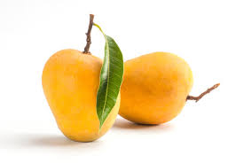
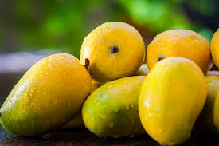
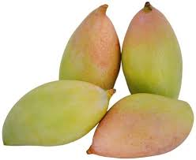
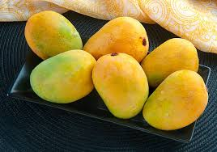

About Mango
Mango (Mangifera indica) is often called the King of Fruits due to its delicious taste, rich aroma, and immense popularity worldwide. It is one of the most widely cultivated tropical fruits and holds cultural, economic, and nutritional importance.
In India, mangoes are not just fruits but a part of tradition and heritage. They symbolize love, prosperity, and happiness. Mango is even considered sacred in some regions, often used in rituals and festive offerings.
Mangoes are rich in vitamins A, C, and E, making them excellent for health. Their juicy sweetness and unique flavor make them perfect for juices, pickles, desserts, and countless culinary creations.
Popular Mango Varieties



